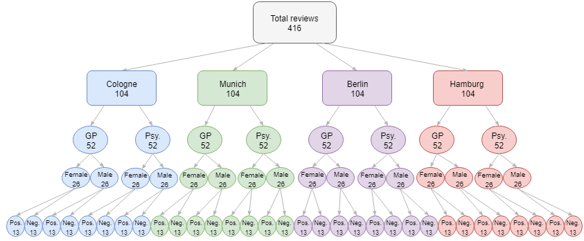

Content analysis of physician online reviews
tl;dr This research project was conducted to investigate if patients in Germany experience discrimination in medical treatment based on their insurance. A sample of 415 online reviews from the physician-rating website "Jameda" was gathered and a content-analysis was applied to the data. A comparison between patients with governmental insurance and privately insured patients was made. It was analyzed whether one group was more likely to give positive reviews, and also whether patients outlined differences in physician-patient communication. The results indicate that patients with private health insurance were more likely to give a positive review to their physician, but there was no indication of differences in communication.
Background Germany has a mandatory tax-founded health insurance system. However, citizens have the option to choose so-called “private” insurance, for which they pay themselves. Private health insurances often pay larger sums for treatments, and accusations that physicians favor patients with private health insurances are commonplace. It was, moreover, found that patients with governmental health insurance report lower levels of health and satisfaction than those with private insurance. Many patients feel like their physicians do not communicate sufficiently with them.
Research goal This research project aimed at investigating whether patients with private health insurance are more likely to be satisfied with their physician, to address concerns of unequal treatment between patients with governmental and private health insurance. Furthermore, it was invested whether patients with different insurance types report different aspects of physician-patient communication (also when controlling for satisfaction).
Method A sample of 415 online reviews from the physician-rating website "Jameda" was gathered. A content analysis was conducted with a coding scheme that was based on the six function model of medical communication. Before the coding took place, a sufficiently high level of inter-rater reliability was established. The data was then analyzed with chi-square tests.
Results It was found that patients with private health insurance were significantly overrepresented among positive reviews. Nonetheless, no statistically significant difference was found between privately insured patients and patients with governmental health insurance regarding communication based on the six function model of medical communication (also not when controlling for satisfaction).